Part A.0: Initial Explorations
I started the project by using DeepFloyd to generate some images.
Here are the results, with prompts labeled as the caption for the first row.
On the second row, I varied the amount of inference steps.
Overall, I think the model adhered to the prompts very well.
For all three images, the results were exactly what I was looking for as I wrote the prompt.
num_inference_steps seems to control the level of "detail" in the resulting image.
As I increased this value, there were more details.
There actually seems to be a "sweet spot" in terms of this value; in my opinion, num_inference_steps=50 was the best for the tiger.
num_inference_steps=20 resulted in limited detail (especially for the background), while num_inference_steps=100 resulted in too much "nonsensical" details.


Part A.1.1: Implementing the Forward Process
To implement diffusion myself, I started with implementing the forward pass of diffusion (the noise addition part). I followed the following formula (credits to CS180 staff for the picture of the formula).

My function got alpha bar t by indexing into the alphas_cumprod array, sampled the noice using torch.randn_like(im), and simply applied the formula.
In a sense, I "interpolated" between my original image and the noise, though the "weights" for the interpolation were square rooted.
Following are visualizations for the result after applying forward.


Part A.1.2: Classical Denoising
I first tried classical denoising (e.g. blurring with a Gaussian) to see how it would work.
I did this by simply using TF.gaussian_blur on the noisy image and a specified kernel size.
After serious effort, I used kernel sizes of 5, 7, and 9 for t=250, 500, and 750, respectively.
Following are the results. They are not great, and I expect neural network denoising to be better.


Here are the noisy images shown again for comparison.
Part A.1.3: One-Step Denoising
To implement one-step denoising, I first derived an expression for the predicted original image based on the unet model's predicted noise. I manipulated the following formula (credits to CS180 staff for the picture of the formula).
I isolated x_0 in the expression above. For each image with noise added to it, I put the model through unet, and then treated (part of) the unet output as the noise epsilon, and the noisy image as x_t.


Part A.1.4: Iterative Denoising
I then implemented iterative denoising to improve the quality of the outputs of the diffusion workflow. To do so, I followed the following formula (credits to CS180 staff for the pictur of the formula).

I defined timesteps as a list from 990 going to 0, decrementing by 30 each time.
For each iteration, I did the following:
I defined t as timesteps[i], and prev_t as timesteps[i + 1].
I got alpha bar t from alphas_cumprod at t, and alpha bar t prime from alphas_cumprod at prev_t.
I calculated alpha t as alpha bar t divided by alpha bar t prime.
I calculated beta as 1 - alpha t.
I calculated the predicted original image (x_0) the same way as explained in the previous section.
With this, I had all the variables I needed to calculate x t prime (except for the variance part).
I included variance by calling the add_variance function on the resulting image and the predicted variance from unet.
With this, I started the next iteration.
The seed I used happened to result in a fairly "plain" iterative denoising result. Other seeds resulted in more interesting results, like on the course website.


Part A.1.5: Diffusion Model Sampling
With the iterative denoising function from the previous part written, I had the ability to generate new images. I did this by passing in noise as the noisy image and starting at 990 (i_start=0) for the time step. Following are the results.


Part A.1.6: Classifier-Free Guidance (CFG)
The results from the previous section weren't great.
Many of the images were somewhat natural-seeming, but didn't make much sense.
To combat this, I wrote a function that implements classifier-free guidance.
This was actually quite a similar function as iterative denoising, as described above.
The main distinction was my noise estimate, for which I followed the following formula (credits to CS180 staff for the pictur of the formula).

In this case, I ran the unet twice, once with the conditioned prompt, and once with a "null" prompt.
Their respective noise estimates are epsilon_c and epsilon_u in the formula above.
Gamma is a parameter that I made default to 7.
After calculating this noise, calculation of the predicted original image was the same as described in part 1.3, and the rest of the values are calculated the same way as described in part 1.4.
Notably, I used the predicted variance from the contitioned prompt.


Part A.1.7: Image-to-image Translation
With CFG denoising implemented, I gained the ability to edit an image by adding noise to it and then passing it through the previous algorithm.
I did exactly this, making sure I'm adding the right amount of noise for each i_start (I used the forward I implemented as well as iterative_denoise_cfg).
Following are my results.
Campanile


Lion


Water Bottle


Part A.1.7.1: Editing Hand-Drawn and Web Images
The procedure explained above works particularly well on hand-drawn images and nonrealistic images. Thus, I drew a car and a christmas tree (the first two rows below) and found a cartoonish picture of a house online. Results are shown below.
Car Drawing


Tree Drawing


House Cartoon


Part A.1.7.2: Inpainting
I then used the diffusion workflow to perform the task of inpainting, where I masked out a part of an image and inpainted it back. To do this, I essentially used the CFG function written above, but with a mask of what part of the image I actually update, according to the following formula (credits to CS180 staff for the picture of the formula).
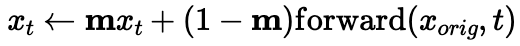
Here, x_t is essentially calculated in the same way as CFG written in part 1.6, so please reference that for my implementation. Though, notably, the t in this formula is referenced as t' in part 1.6. This means that after calculating x_t' (in part 1.6's words), I would multiply it with a binary mask indicating where I want to fill in, and the rest will be a noisy version of the original image. Inside of the forward function, I passed in t' (which is also called prev_t). After all of this, x_t' (in the terms of part 1.6) would proceed to the next iteration.
Campanile


Walking Woman


Flower


Part A.1.7.3: Text-Conditional Image-to-image Translation
Having previously implemented CFG, I actually also unlocked the ability to edit from one image to another.
I can do this by changing the conditioned prompt that I pass into the CFG function.
Below, I show three examples where the prompt is related to the image on the left, and the original image is shown on the right.
The prompts are respectively, "a rocket ship", "a pencil", and "a fierce and scary tiger".
Rocket-Campanile


Pencil-Flower


Tiger-Lion


Part A.1.8: Visual Anagrams
After image-to-image translations, I started doing something even more interesting with diffusion. I decided to make visual anagrams, which are images that look like one thing one orientation, and another thing another orientation. I did this with a process very similar to CFG, except instead of being guided in one direction, I became guided in "two directions" instead, applying the following formula (credits to CS180 staff for the picture of the formula).
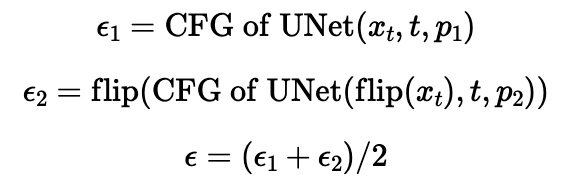
I implemented precisely this formula in code. For a given step at time t (which I fed into the unet models):
epsilon1 is the predicted noise for the upright image towards the first prompt; to calculate it, I ran unet on the upright image with the first prompt as well as with a null prompt, and calculated the predicted noise according to the formula in part 1.6 (CFG).
epsilon2 is the predicted noise for the upside down image towards the second prompt; to calculate it, I ran unet on the upside down image with the second prompt as well as with a null prompt, and calculated the predicted noise according to the formula in part 1.6 (CFG). Then, I flipped the predicted noise.
Then, I used the average noise prediction as well as average variance prediction (over the two runs of unet with non-null prompts, and with the result of the upside down image flipped) for the rest of the function, which was identical to CFG (please refer to it for my implementation).
I show some of my results below. Their prompts are:
"an oil painting of a mushroom cloud"
"an oil painting of a bearded face"
"a lithograph of a snowy mountain peak"
"a lithograph of a white wolf's face"
"an oil painting of an old man"
"an oil painting of people around a campfire"
Cloud-Man


Mountain-Wolf


Man-Campfire

Part A.1.9: Hybrid Images
I did something else interesting with diffusion: I made "hybrid images" that look like one thing close up and another thing far away. Much like part 1.8, the implementation was actually very similar to CFG, except it had a change in how I calculated the estimated noise each time. In particular, I applied the following formula (credits to CS180 staff for the picture of the formula).
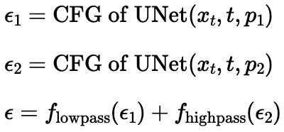
I implemented precisely this formula in code. For a given step at time t (which I fed into the unet models):
epsilon1 is the predicted noise for the low-frequency part of the image (what the image looks like from afar); to calculate it, I ran unet on the image with the first prompt as well as with a null prompt, and calculated the predicted noise according to the formula in part 1.6 (CFG). Then, I low-pass filtered it by convolving it with a gaussian with size 33 and sigma=2.
epsilon2 is the predicted noise for the high-frequency part of the image (what the image looks like close up); to calculate it, I ran unet on the image with the second prompt (while using the results of running on the null prompt from earlier), and calculated the predicted noise according to the formula in part 1.6 (CFG). Then, I high-pass filtered it by subtracting it's convolution with a gaussian with size 33 and sigma=2.
Then, I used the average noise prediction as well as average variance prediction (over the two runs of unet with non-null prompts) for the rest of the function, which was identical to CFG (please refer to it for my implementation).
I show some of my results below. Their prompts are:
"an oil painting of a mushroom cloud"
"a painting of an ice cream cone"
"a painting of a mountain"
"a fierce and scary tiger"
"a lithograph of a skull"
"a lithograph of waterfalls"


Part B.1: Training a Single-Step Denoising UNet
In part B, I implemented my own unet capable of generating handwritten digits using the diffusion process. This started with implementing a function to add noise to the images, and implementing a basic unet.
Part B.1.2: Using the UNet to Train a Denoiser
I "noised" images by adding to them a Gaussian noise of mean 0 and variance 1, multiplied by a "severity" of the noising described by the variable sigma. The following row of images shows the noising process.
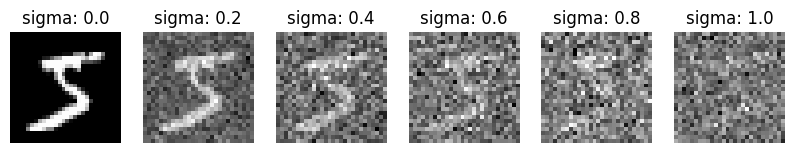
Part B.1.2.1: Training
I then implemented a basic unet (without time conditioning for flow matching nor class conditioning for digit generation).
I followed precisely the architecture given on the website.
I then trained the model to denoise a noisy image (sigma=0.5), with the given hyperparameter choices on the website (e.g. AdamW with lr=1e-4, D=128, batch_size=256, 5 epochs).
My loss plot is as follows, and I show results on some validation images after the first and the fifth epoch below.
Overall, the results were great, even for evaluation right after the first epoch (although performance after the first epoch is still slightly worse than performance after the fifth epoch).
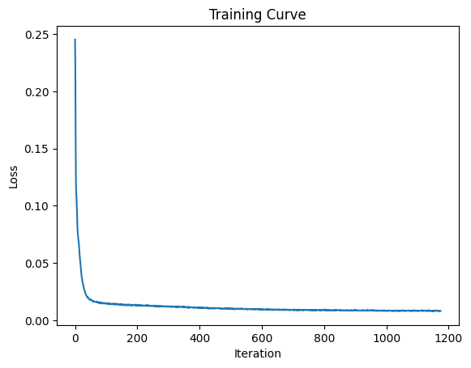
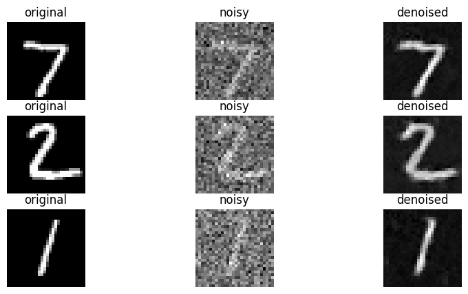
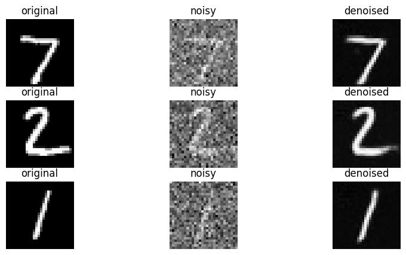
Part B.1.2.2: Out-of-Distribution Testing
Having trained a denoising unet, I then tested its robustness to input images with various noise levels (sigma).
I visualize some results below, where rows 1, 3, 5, 7, 9, 11, 13 are rows containing the noisy images (with noise levels being 0.0, 0.2, 0.4, 0.6, 0.8, 1.0 from the leftmost column to the rightmost column).
Rows 2, 4, 6, 8, 10, 12, 14 contains denoised results, each for the image immediately above it.
Overall, the model performed well when the noise levels were lower than what it encountered during training. However, at sigma=0.8 and sigma=1.0, the model did not reliably denoise the images, with some random patterns from the noise staying.
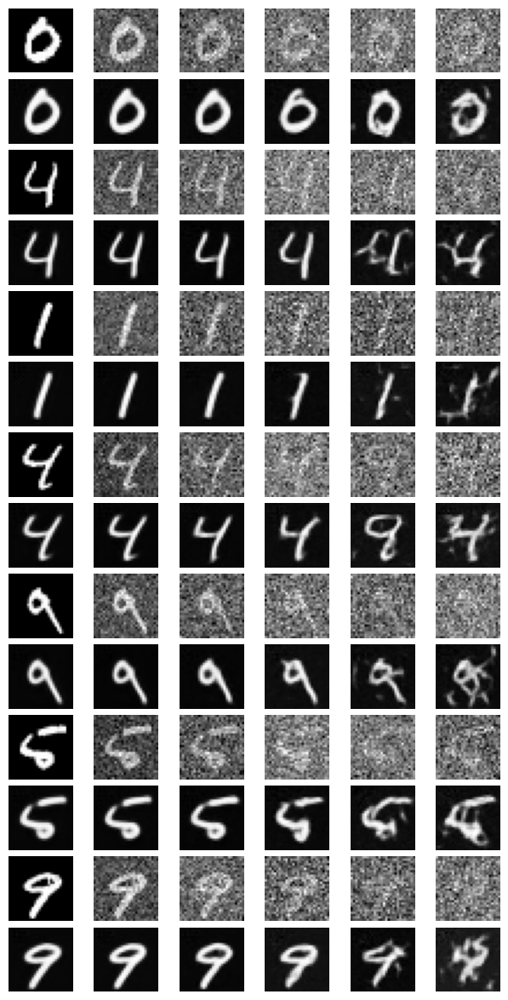
Part B.1.2.3: Denoising Pure Noise
With the unet model set up, I then tried to use the model to "denoise pure noise".
I followed the same training procedure as part 1.2.1, except instead of feeding it noised images, I fed it pure noise.
The results were, perhaps unsurprisingly, not great.
After all, given pure noise, the model has no real information as to which digit it is expected to give.
The results (after both the 1st and the 5th epoch) were just a "blend" of all the digits (in particular, the features of 3, 8, 6, and 5 seem quite visible) for all outputs.
The model seems to have learned an "average" of the digits to minimize the loss of its predictions.
The results from the 5th epoch were slightly more "smooth" than the results from the 1st epoch.
Below, I visualize firstly the training loss plot, and then some samples after the 1st and 5th epochs. For the samples, the first row has the noise inputs, and the second row has the model outputs on the noise input immediately above it.
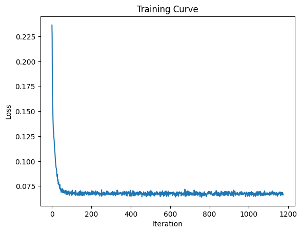
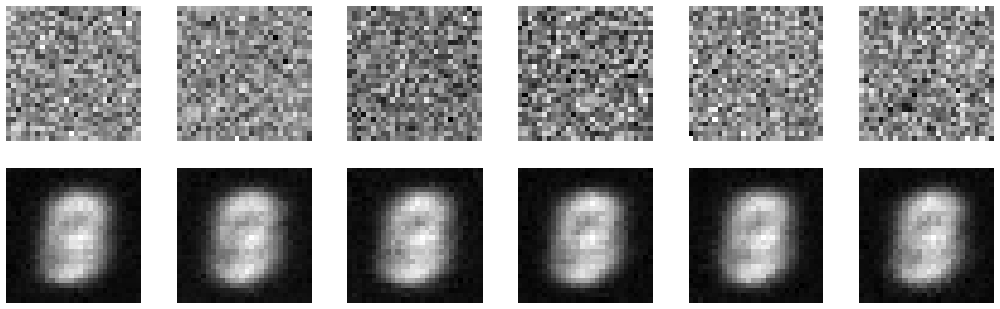
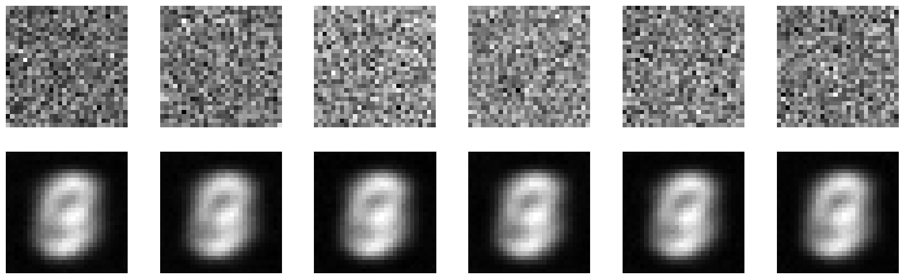
Part B.2: Training a Flow Matching Model
Part B.2.2: Training the UNet
I then started to make the unet able to be used in flow-matching workflows by conditioning it with the time step.
To do this, I took my existing implementation for unet, and added an input of t, which passes through two mini MLPs before being elementwise multiplied with activations.
I then trained this model to denoise, following the training procedure detailed on the project website, as well as its recommended hyperparameter choices (e.g. AdamW with lr=1e-2 and learning rate decay, D=64, batch_size=64, 10 epochs).
Below, I show the training loss plot.
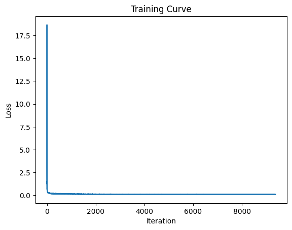
Part B.2.3: Sampling from the UNet
With a time-conditioned unet trained, I gained the ability to do flow-matching-like tasks. I followed the algorithm given on the project website (e.g. predicting the negative noise direction at each time step and stepping in that direction, repeating for num_ts iterations).
Below, I present sampled results (denoising from pure noise) after the 1st, 5th, and 10th epochs.
After epoch 1, most of the outputs didn't make sense.
After epoch 5, many digit-like images were generated, with other pictures resembling penstrokes, but not really digits.
The results after epoch 10 were similar quality to the results after epoch 5.
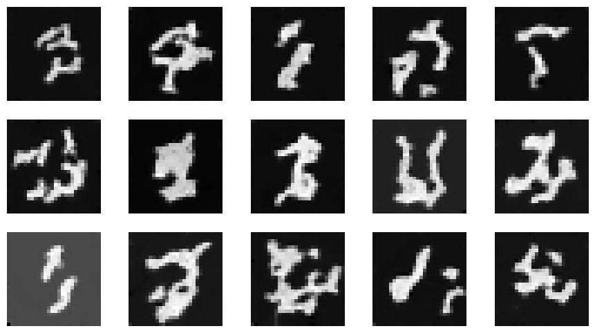
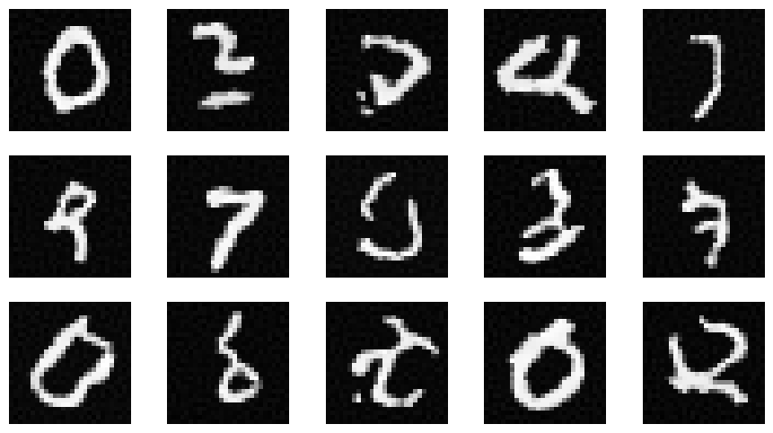
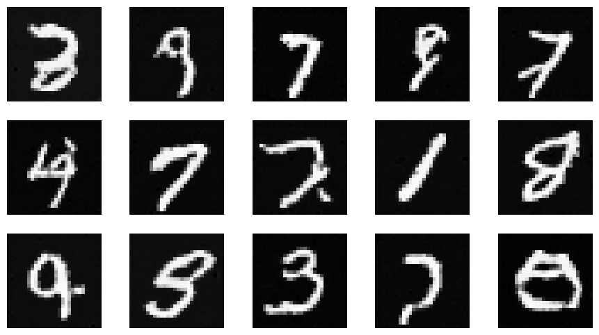
Part B.2.5: Training the UNet
To further improve the quality of my generated digits, I added conditioning on the digit to my unet.
I followed the project website's suggest method of doing this; in particular, the class c is a one-hot vector of length 10 that (like time t) passes through two MLPs.
I made the outputs of the MLPs for c element-wise multiplied with activations at certain stages, and the outputs of the MLPs for t added at those same stages.
I then trained this model, following the same training procedure as the previous part (e.g. AdamW with lr=1e-2 and learning rate decay, D=64, batch_size=64, 10 epochs).
I present the loss plot below.
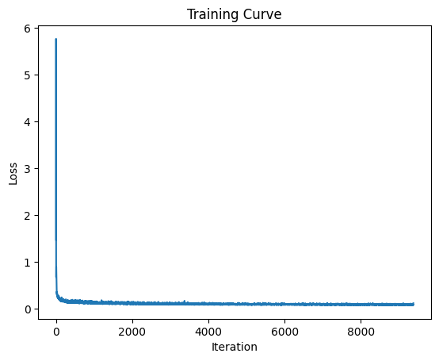
Part B.2.6: Sampling from the UNet
I then sampled from my trained model to perform handwritten digits generation.
I followed the classifier-free guidance algorithm that I also implemented in part A of this project.
I essentially took the difference between the conditional noise estimation and the unconditional noise estimation as a "guidance direction", and added a multiple of that (default=5.0) to the unconditional noise estimation as the final noise estimate.
I show my results after the 1st, 5th, and 10th epochs below.
Results after the 1st epoch were actually already decent, though some details for the 4's and 5's were still off.
Results after the 5th and 10th epochs were great.
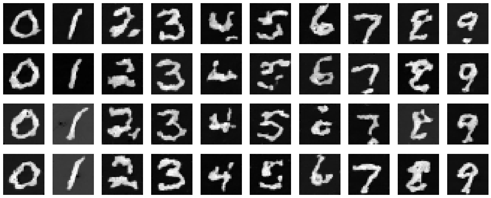
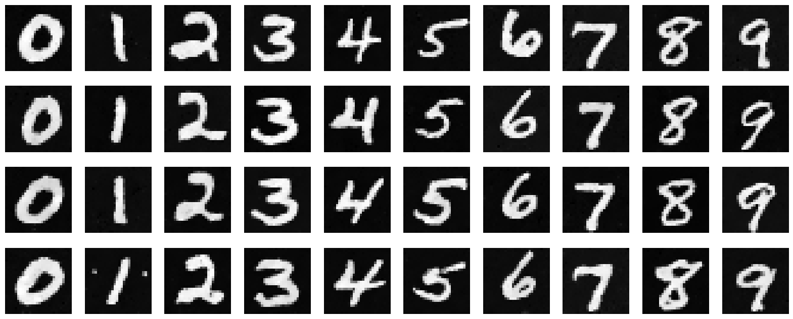
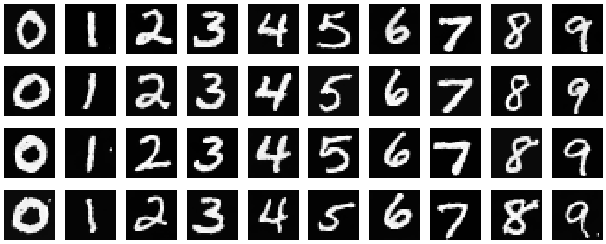
Part B.2.6: UNet trained without learning rate decay
I then explored training the UNet without learning rate decay.
In accordance with the spirit of "making things simple", I first tried the simple method of just setting my learning rate to some intermediate value in the beginning (specifically I used 1e-3).
This actually worked very well. I show my loss plot, as well as samples of each digit after the 1st, 5th, and 10th epochs below.
In the end, this method resulted in similar performance as using a learning rate scheduler.
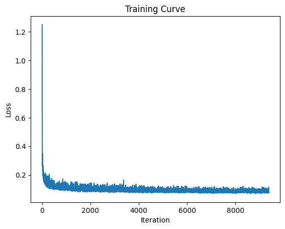
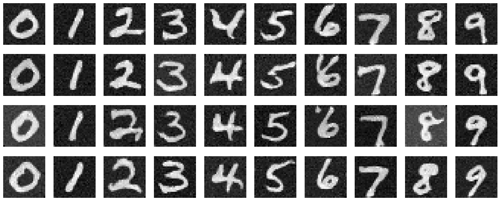
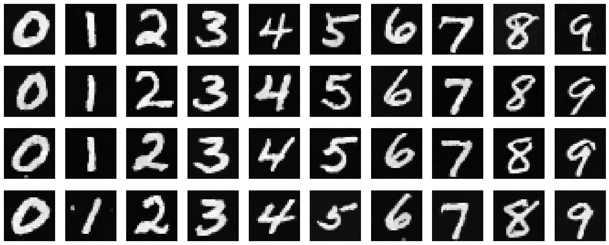
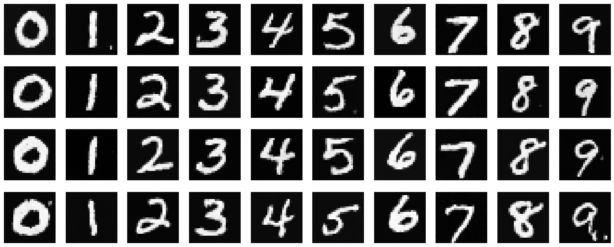